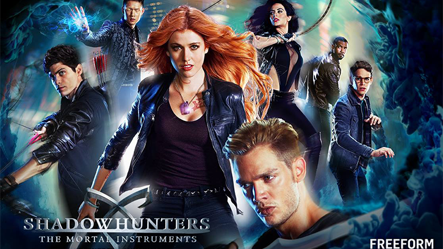

ShadowHunters-The Mortal Instruments
The ShadowWorld
The Shadow World is a hidden, supernatural universe that exists alongside the mundane human world in The Shadowhunters Chronicles. It is inhabited by Shadowhunters.Downworlders (like vampires, werewolves, faeries, and warlocks), and demons. While the human world remains unaware of its existence, the Shadow World operates with its own intricate laws, politics, and organizations.
At the heart of this realm is the Clave, the governing body of Shadowhunters, which enforces rules and maintains the fragile balance between Shadowhunters and Downworlders. The Shadow World is rich in lore, featuring ancient artifacts, runes that grant Shadowhunters special powers, and an ongoing struggle to keep demonic forces at bay.
Key locations include Idris, the homeland of Shadowhunters, and its capital, Alicante, often called the City of Glass. Other important places include Institutes (bases for Shadowhunters) and Downworlder enclaves like warlock lairs and vampire courts.
What makes the Shadow World fascinating is the way it weaves deep relationships, alliances, and conflicts among its inhabitants, while exploring themes of identity, prejudice, and coexistence. It’s a universe filled with mystery, danger, and intrigue at every turn!
